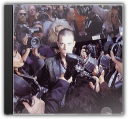
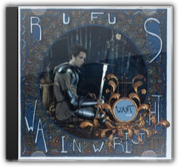

Whilst one suspects some kind of pre-millennial hysteria prompted Qmagazine's readers to vote OK ComputerThe Greatest Album Ever Made scarcely five months after its release, it certainly doesn't look stupid up there in the pantheon. Following the hot red rock attack of 1995's The Bends, OK Computerheads out into the cold deep space of prog-rock and comes back with stuff that makes mere pop earthlings like Stereophonics tremble. Whilst the eight-minute-long "Paranoid Android" comes across like "Bohemian Rhapsody" with a gun held to its head, and "Electioneering" is a little too like a kiddy-version of Blood And Chocolate-era Elvis Costello to be truly revelatory, the rest of OK Computerspans the sublime to the ridiculously sublime. Thom Yorke had been obsessed with Ennio Morricone during the recording of the album (in a haunted mansion, fact-fans), and it shows on the expansive space-dream of "Subterranean Homesick Alien" and the endlessly comforting closer "The Tourist". And if neither "No Surprises" (played on a toy guitar with Yorke and Ed O'Brien harmonising like a two-man Crowded House) nor "Lucky" (recorded in one day for the Bosnian aid album War Child—it reduced Yorke to tears the first time he heard it played back) make the hairs on your skin spit with electricity, then maybe you're with the Qreader who voted for Anitaby Anita Dobson. —Caitlin Moran 
Radiohead may well be the most courageous band in Britain. Their second album, The Bends, was a success both critically and commercially, and they followed it up with an album of epic prog-rock, OK Computer, that would have destined a lesser band to commercial failure and, eventually, obscurity. Instead, it was almost universally hailed as one of the finest albums ever recorded. So it should come as no great surprise that their fourth album, Kid A, is even more experimental, owing a debt to the studio-born soundscapes of Brian Eno, Aphex Twin and even later Talk Talk. Kid Ais an album that would not sound out of place on the Warp Records roster, as keyboards, sequencers and electronic effects take the place of guitars on most tracks (particularly unusual for a band that boasts three guitarists). In fact, this is an album that succeeds without rock's bombast, from the looping keyboards of album opener "Everything In Its Right Place" to the bouncing, bass-led "The National Anthem" to the album's hauntingly atmospheric highlight, "Idioteque". Meanwhile, more traditional Radiohead tracks like "How To Disappear Completely" and "Optimistic" offer a natural bridge between the electronic noodlings of Kid Aand the (slightly) more mainstream-sounding OK Computer. Radiohead may well be the most innovative popular band since the Beatles; as such, Kid Arepresents the most successful evolution of a major British act since Sgt Pepper's. —Robert Burrow 
There's a mellifluous, melodic feel to RJD2's production on Deadringerthat enables him to easily straddle the US/European divide between hip-hop and trip hop, even coming close to the intricate and lucid inventiveness of the Avalanches in places.

Life Thru a Lens
Robbie Williams
When Life Thru A Lenscame out, Robbie Williams was a swiftly-failing music industry joke—"Blobbie Pill-iams", the ballooning drug-freak, drunk and bleary-eyed at far too many parties for his own good. Although his cover of George Micheal's "Freedom" had gone in at Number 2, "Old Before I Die" and "South Of The Border" sounded too like weak-tea Oasis for any real chart action and people were starting to talk about him as a failure. Then the elegiac "Angels" with its simple black-and-white video hit MTV pay-dirt, and six months later Williams was picking up six BRIT Awards, showing off his post-rehab six-pack and dating an All Saint. And so the rest of Life Thru A Lensis a likeable, hyperactive stream of consciousness—much like Williams himself. "Lazy Days" is an unexpectedly gorgeous psychedelic swoon, and "Let Me Entertain You"—"When I'm Cleaning Windows" for the Hooch generation—is still an irresistible offer. —Caitlin Moran

Want One
Rufus Wainwright
Rufus Wainwright croons and cries through another set of obscenely lush and opulent pop operettas on his third album, Want One. As is to be expected, the songs are meticulously layered and richly textured, with full orchestral passages and many-throated harmonies. Producer Marius deVries (Björk, Massive Attack, Madonna) didn't mess with the already successful Wainwright sound, allowing for the young singer/ songwriter/multi-instrumentalist to explore his familiar themes of love, loss, and "singin' about places" with the anticipated fanfare and flourish. The album's strongest segment comes in the middle, beginning with the intimate-to-epic "Go or Go Ahead," barreling through the wildly spinning rock opera "14th Street," and landing softly on the gently chiming "Natasha." Oddly, unlike his previous two releases, Wainwright's musings seem less focused and a little meandering on a handful of the songs. The lazy, loping "Want" is much more stream-of-consciousness t! han anything else he's recorded, and the slightly goofy "Vibrate" (with its references to Britney Spears and electroclash) may sound dated before the album is played a second time. The sessions that produced Want One were apparently so prolific that another volume (Want Two?) is in the works, but it could turn out to be that distilling both albums down to one would have made for a more complete overall work. Who knows, this new looseness to his rigid pop constructivism may end up being a good thing, and, frankly, Wainwright could be singing lists of names out of the phone book and it would still be more exciting and inventive than 99 percent of the other albums out there. —Zac Johnson, All Music Guide |

In a thrilling UK Garage scene, blighted only by a reliance on drippy soul cliché and tiresome braggadocio, The Streets' eminently quotable Mike Skinner may just be the voice to take it to the next level with Original Pirate Material. This debut is a staggeringly eloquent and fearlessly honest snapshot of gritty street-level existence, as experienced by an ordinary bloke. At first listen, the Birmingham-born Skinner's cheeky cockney affectations grate slightly. But for every line that makes you squirm, there's 20 that drop your jaw. "Has It Come To This?" is "A day in the life of a geezer", a seductive encapsulation of London lifestyle, presented raw as a bootleg, but bulging with sharp wit and feverish detail. "Stay Positive" weaves a fearful tale of heroin addiction, Skinner sneering "I ain't no preaching fucker/ An' I ain't no do-goodie-goodie either/ This is when shit goes pear-shaped". And "The Irony of It All" presents a beguiling case for legalisation, presenting a fictional exchange between a beered-up, self-righteous lager lout and a fey student weed enthusiast. Original Pirate Materialis a milestone, the real voice of British youth set down on record. Don't miss this.—Louis Pattison 
How do you follow an acclaimed debut in your own inimitable style without repeating past glory? The answer is simple—make a concept album. Mike Skinner's (aka the Streets) A Grand Don't Come for Freetells the story of his recent troubles and triumphs in a manner that is as much music-hall as it is friends chatting on the phone. The story is simple but the narrative is far more cohesive than a string of songs explaining the plot. His broken television, a pivotal part of the story is referenced throughout, as are warning signs that his girlfriend, Simone, is seeing best mate Dan behind his back. It may sound like a soap opera but is given added depth by the attention to detail in lyrics ("she was with the white-shirted man in McDonalds car park" on "Such a Twat"); the structure of the music as if it were following the dialogue (hi-hats, whooshes and piano stabs as the effects of Ecstasy take hold on "Blinded by the Light); and an openness to wear his heart on his sleeve (the beautiful ode to stoned love "I Wouldn't Have it Any Other Way" and the heart-wrenching break-up song, "Dry Your Eyes"). 
As implausible as it seems now, back in 1994, three scruffy heavy-metal fans from Belfast were tipped to take over Nirvana's crown. Therapy? had hit upon a genuinely thrilling mash-up of punk, metal, speed, volume, pop and lyrics of pure Rockney: try "Masturbation saved my life" or "I know how Jeffrey Dahmer feels—lonely, lonely" on your pencil-case and see what Amanda in Personnel says. Troublegumwas the band's mighty peak: "Screamager" rolls its sleeves up and gets on with the business of punching you repeatedly in the face with the power of rock;"Stop It You're Killing Me" has a triumvirate of power-chords that could stop Metallica in their steps, and by the time "Unrequited"'s thrown in its arse-kicking jazz time-signature and a minute of pure screaming—you'll be rejecting solids for a week. Class. —Caitlan Moran 
The ultimate slow-burner, Travis's second album infused its way into the psyche of post-Radiohead Britain with an endearingly humble grace. It's not quite certain how Travis went from being the happy-clappy Britpop also-rans of their debut Good Feelingto becoming the gifted pop craftsmen that moulded the gentle emotional trough of the chart-topping The Man Who, but it would seem that the tired, lonely lovelorn niche is one that suits Travis rather well. So, "Writing To Reach You", "Driftwood" and "Why Does It Always Rain On Me?" are the meekest songs to ever eat daytime radio alive. Elsewhere, "As You Are" sounds like Thom Yorke swaddled in blankets, and the closing "Slide Show" punctures rock mythology with an impossibly beautiful lyric: "There is no design for life/ There's no devil's haircut in my mind/ There is not a wonderwall to climb, or step around". —Louis Pattison |

Liam Clancy
Collection Total:
1504 Items
1504 Items
Last Updated:
Jan 14, 2011
Jan 14, 2011


 Made with Delicious Library
Made with Delicious Library